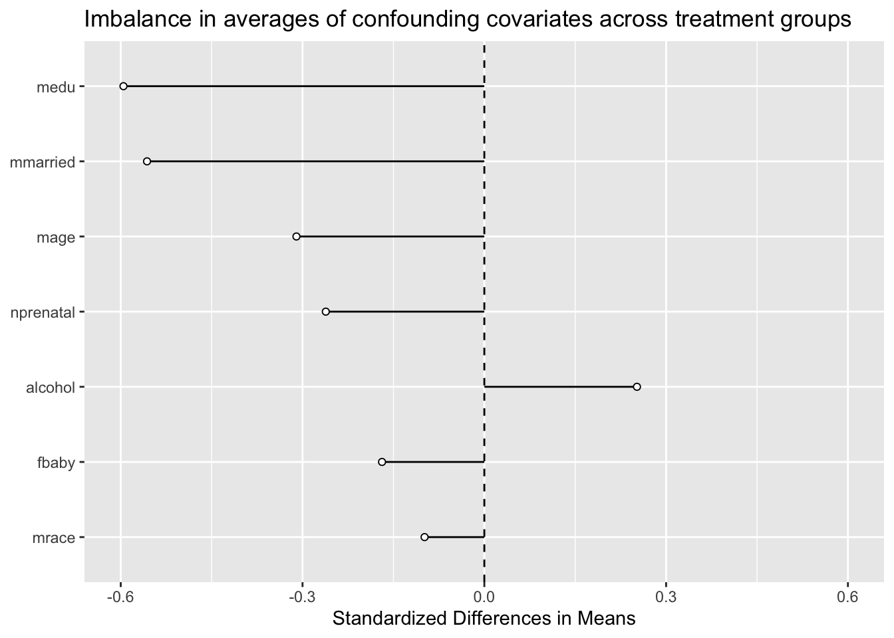
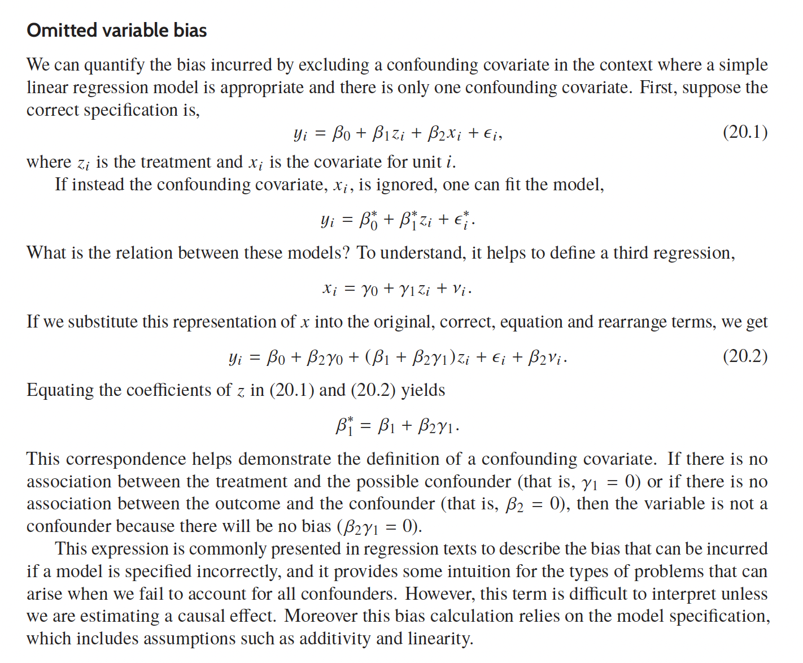
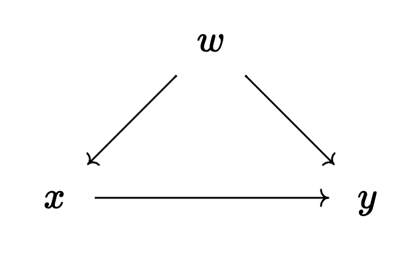

Code
library(tidyverse)
library(broom)Replicate balance plot.
Rows: 4,642
Columns: 10
$ bweight <dbl> 3459, 3260, 3572, 2948, 2410, 3147, 3799, 3629, 2835, 3880, …
$ lbweight <dbl> 0, 0, 0, 0, 1, 0, 0, 0, 0, 0, 0, 0, 0, 0, 1, 0, 0, 0, 0, 0, …
$ mbsmoke <dbl> 0, 0, 0, 0, 0, 0, 0, 0, 0, 0, 1, 0, 0, 0, 0, 0, 0, 0, 0, 1, …
$ mmarried <dbl> 1, 0, 1, 1, 1, 0, 1, 1, 1, 1, 1, 0, 1, 1, 0, 1, 1, 1, 1, 0, …
$ mage <dbl> 24, 20, 22, 26, 20, 27, 27, 24, 21, 30, 26, 20, 34, 21, 23, …
$ medu <dbl> 14, 10, 9, 12, 12, 12, 12, 12, 12, 15, 12, 12, 14, 8, 12, 12…
$ fbaby <dbl> 0, 0, 0, 0, 1, 1, 0, 1, 1, 0, 1, 1, 0, 1, 1, 0, 0, 0, 0, 0, …
$ alcohol <dbl> 0, 0, 0, 0, 0, 0, 0, 0, 0, 0, 0, 0, 0, 0, 0, 0, 0, 0, 0, 0, …
$ mrace <dbl> 1, 0, 1, 1, 1, 1, 1, 1, 1, 1, 1, 0, 1, 1, 0, 1, 1, 1, 1, 0, …
$ nprenatal <dbl> 10, 6, 10, 10, 12, 9, 16, 11, 20, 9, 14, 5, 13, 8, 4, 10, 13…d |>
select(!matches("weight")) |>
pivot_longer(!mbsmoke, names_to = "covariate") |>
group_by(mbsmoke, covariate) |>
summarize(avg = mean(value), sd = sd(value)) |>
pivot_wider(names_from = mbsmoke, values_from = c(avg, sd)) |>
mutate(diff = (avg_1 - avg_0) / sd_1) |>
mutate(sign = factor(sign(diff), labels = c("negative", "positive"))) |>
mutate(covariate = fct_reorder(covariate, abs(diff))) |>
ggplot(aes(x = diff, y = covariate)) +
geom_segment(aes(xend = diff, yend = covariate), x = 0) +
geom_point(fill = "white", shape = 21) +
geom_vline(xintercept = 0, linetype = "dashed") +
coord_cartesian(xlim = c(-0.6, 0.6)) +
labs(y = NULL, x = "Standardized Differences in Means",
title = "Imbalance in averages of confounding covariates across treatment groups")`summarise()` has grouped output by 'mbsmoke'. You can override using the
`.groups` argument.
This question is copied from NHK’s exercises. To answer this question you need to read sections 14.1 and 14.2 of The Effect.
You want to know whether practicing cursive improves your penmanship (on a 1-10 scale). You find that, among people who don’t practice cursive, average penmanship is 5, 10 people are left-handed, 2 are ambidextrous, and 88 are right-handed. Among people who do practice cursive, 6 are left-handed with average penmanship 7, 4 are ambidextrous with average penmanship 4, and 90 are right-handed with average penmanship 6.
You should probably represent the data in a better format, like this:
| Cursive (Treatment) | No Cursive (Control) | |
|---|---|---|
| Left-handed | Avg = 7 N = 6 |
Avg = ? N = 10 |
| Right-handed | Avg = 6 N = 90 |
Avg = ? N = 88 |
| Ambidextrous | Avg = 4 N = 4 |
Avg = ? N = 2 |
| Total | Avg = ? N = 100 |
Avg = 5 N = 100 |
You want to create a set of weights that will make the treated group match the control group on handedness. Follow the process in section 14.2, paying attention to why certain numbers are going in certain positions. What weights will be given to the left, ambidextrous, and right-handed people in the control group?
Since you want to make the treated group match the control group, all three weights for the control group are simply 1.
What weights will be given to the left, ambidextrous, and right-handed people in the treated group?
| Cursive (Treatment) | Weights | |
|---|---|---|
| Left-handed | Avg = 7 N = 6 |
\[ \frac{10}{6} \approx 1.6667 \] |
| Right-handed | Avg = 6 N = 90 |
\[ \frac{88}{90} \approx 0.9778 \] |
| Ambidextrous | Avg = 4 N = 4 |
\[ \frac{2}{4} = 0.5 \] |
| Total | Avg = ? N = 100 |
Use the weights from part b to calculate the proportion of left-handed people in the treated group, as well as the proportion of ambidextrous people and the proportion of right-handed people. If you don’t get 10%, 2%, and 88% (or very close with some rounding error), your weights are wrong, try again.
| Cursive (Treatment) | Weights | Proportion | |
|---|---|---|---|
| Left-handed | Avg = 7 N = 6 |
\[ \frac{10}{6} \approx 1.6667 \] | \[ 0.1 \] |
| Right-handed | Avg = 6 N = 90 |
\[ \frac{88}{90} \approx 0.9778 \] | \[ 0.88 \] |
| Ambidextrous | Avg = 4 N = 4 |
\[ \frac{2}{4} = 0.5 \] | \[ 0.02 \] |
| Total | Avg = ? N = 100 |
Prop = 1 |
Source:
What is the weighted average penmanship score in the treated group?
What is the effect of practicing cursive that we would estimate using this data?
Note. I will upload a fully worked out simulation learning experience when I get the time…
Last week I was going to have you re-do something I found in Gelman et al. (2020, p. 385) that’s supposed to build intuition about omitted variable bias and then compare it with results from simulations.

It seems simple at first, but it’s also misleading.
So, I changed things up a bit and added a simple toy DAG:

\[ \begin{align} &(1) &y_i &= \beta_0 + \beta_1 x_i + \beta_2 w_i + \varepsilon_i, && \varepsilon_i \sim \text{Normal}(0, \sigma_y^2) \\\\ &(2) &x_i &= \alpha_0 + \alpha_1 w_i + u_i, && u_i \sim \text{Normal}(0, \sigma_x^2) \\\\ &&&&&w_i \sim \text{Normal}(0, \sigma_w^2) \end{align} \]
---
title: "Solutions 6"
---
```{r}
#| message: false
library(tidyverse)
library(broom)
```
## Exercise
Replicate balance plot.
```{r}
d <- haven::read_dta("data/cattaneo2.dta")
d <- d |>
haven::zap_labels() |>
select(bweight, lbweight, mbsmoke, mmarried,
mage, medu, fbaby, alcohol, mrace, nprenatal)
glimpse(d)
d |>
select(!matches("weight")) |>
pivot_longer(!mbsmoke, names_to = "covariate") |>
group_by(mbsmoke, covariate) |>
summarize(avg = mean(value), sd = sd(value)) |>
pivot_wider(names_from = mbsmoke, values_from = c(avg, sd)) |>
mutate(diff = (avg_1 - avg_0) / sd_1) |>
mutate(sign = factor(sign(diff), labels = c("negative", "positive"))) |>
mutate(covariate = fct_reorder(covariate, abs(diff))) |>
ggplot(aes(x = diff, y = covariate)) +
geom_segment(aes(xend = diff, yend = covariate), x = 0) +
geom_point(fill = "white", shape = 21) +
geom_vline(xintercept = 0, linetype = "dashed") +
coord_cartesian(xlim = c(-0.6, 0.6)) +
labs(y = NULL, x = "Standardized Differences in Means",
title = "Imbalance in averages of confounding covariates across treatment groups")
# ggsave(
# plot = last_plot(),
# filename = "images/imbalance_plot_example.png",
# device = "png",
# dpi = "print",
# height = 5,
# width = 7
# )
```
## Exercise
*This question is copied from NHK's exercises. To answer this question you need to read sections 14.1 and 14.2 of [The Effect](https://theeffectbook.net/).*
*You want to know whether practicing cursive improves your penmanship (on a 1-10 scale). You find that, among people who don’t practice cursive, average penmanship is 5, 10 people are left-handed, 2 are ambidextrous, and 88 are right-handed. Among people who do practice cursive, 6 are left-handed with average penmanship 7, 4 are ambidextrous with average penmanship 4, and 90 are right-handed with average penmanship 6.*
You should probably represent the data in a better format, like this:
+----------------------+----------------------+----------------------+
| | Cursive (Treatment) | No Cursive (Control) |
+======================+:====================:+:====================:+
| Left-handed | Avg = 7 | Avg = ? |
| | | |
| | N = 6 | N = 10 |
+----------------------+----------------------+----------------------+
| Right-handed | Avg = 6 | Avg = ? |
| | | |
| | N = 90 | N = 88 |
+----------------------+----------------------+----------------------+
| Ambidextrous | Avg = 4 | Avg = ? |
| | | |
| | N = 4 | N = 2 |
+----------------------+----------------------+----------------------+
| Total | Avg = ? | Avg = 5 |
| | | |
| | N = 100 | N = 100 |
+----------------------+----------------------+----------------------+
### Part A
> You want to create a set of weights that will *make the treated group match the control group on handedness*. Follow the process in [section 14.2](https://theeffectbook.net/ch-Matching.html#weighted-averages), paying attention to *why* certain numbers are going in certain positions. What weights will be given to the left, ambidextrous, and right-handed people *in the control group*?
Since you want to make the treated group match the control group, all three weights for the control group are simply 1.
### Part B
> What weights will be given to the left, ambidextrous, and right-handed people *in the treated group*?
+-----------------+----------------------+------------------------------------+
| | Cursive (Treatment) | Weights |
+=================+:====================:+:==================================:+
| Left-handed | Avg = 7 | $$ \frac{10}{6} \approx 1.6667 $$ |
| | | |
| | N = 6 | |
+-----------------+----------------------+------------------------------------+
| Right-handed | Avg = 6 | $$ \frac{88}{90} \approx 0.9778 $$ |
| | | |
| | N = 90 | |
+-----------------+----------------------+------------------------------------+
| Ambidextrous | Avg = 4 | $$ \frac{2}{4} = 0.5 $$ |
| | | |
| | N = 4 | |
+-----------------+----------------------+------------------------------------+
| Total | Avg = ? | |
| | | |
| | N = 100 | |
+-----------------+----------------------+------------------------------------+
### Part C
> Use the weights from part b to calculate the *proportion of left-handed people in the treated group*, as well as the proportion of ambidextrous people and the proportion of right-handed people. If you don’t get 10%, 2%, and 88% (or very close with some rounding error), your weights are wrong, try again.
+------------------+---------------------+------------------------------------+--------------+
| | Cursive (Treatment) | Weights | Proportion |
+==================+:===================:+:==================================:+:============:+
| Left-handed | Avg = 7 | $$ \frac{10}{6} \approx 1.6667 $$ | $$ |
| | | | 0.1 |
| | N = 6 | | $$ |
+------------------+---------------------+------------------------------------+--------------+
| Right-handed | Avg = 6 | $$ \frac{88}{90} \approx 0.9778 $$ | $$ |
| | | | 0.88 |
| | N = 90 | | $$ |
+------------------+---------------------+------------------------------------+--------------+
| Ambidextrous | Avg = 4 | $$ \frac{2}{4} = 0.5 $$ | $$ |
| | | | 0.02 |
| | N = 4 | | $$ |
+------------------+---------------------+------------------------------------+--------------+
| Total | Avg = ? | | Prop = 1 |
| | | | |
| | N = 100 | | |
+------------------+---------------------+------------------------------------+--------------+
Source:
```{r}
(10/6) * (6 / 100) ## LH
(88/90) * (90/100) ## RH
(1/2) * (4/100) ## Am
```
### Part D
> What is the weighted average penmanship score in the treated group?
```{r}
w <- c("LH" = (10/6) * (6 / 100), "RH" = (88/90) * (90/100) , "Am" = (1/2) * (4/100))
w
weighted.mean(c(7, 6, 4), w)
```
### Part E
> What is the effect of practicing cursive that we would estimate using this data?
```{r}
## Non-Weighted Effect
weighted.mean(c(7, 6, 4), c(6, 90, 4) / 100) - 5
## Weighted Effect
weighted.mean(c(7, 6, 4), w) - 5
```
## A Lesson in Simulation
*Note. I will upload a fully worked out simulation learning experience when I get the time...*
Last week I was going to have you re-do something I found in @gelman2020 [pp. 385] that's supposed to build intuition about omitted variable bias and then compare it with results from simulations.
{fig-align="center" width="90%"}
It seems simple at first, but it's also misleading.
So, I changed things up a bit and added a simple toy DAG:
::: grid
::: g-col-4
{fig-align="center" width="100%"}
:::
::: g-col-8
$$
\begin{align}
&(1) &y_i &= \beta_0 + \beta_1 x_i + \beta_2 w_i + \varepsilon_i,
&& \varepsilon_i \sim \text{Normal}(0, \sigma_y^2) \\\\
&(2) &x_i &= \alpha_0 + \alpha_1 w_i + u_i, && u_i \sim \text{Normal}(0, \sigma_x^2)
\\\\ &&&&&w_i \sim \text{Normal}(0, \sigma_w^2)
\end{align}
$$
:::
:::
::: callout-tip
I expressed Equation (2) so that it would make sense to *generate* data from a simulation.
```{r}
fork_simulation <- function(N = 1e5, a0 = 1, a1 = 1, b0 = 1, b1 = 1, b2 = 1) {
tibble(
w = rnorm(N, 0, 20),
x = a0 + a1*w + rnorm(N, 0, 2),
y = b0 + b1*x + b2*w + rnorm(N, 0, 2)
)
}
```
:::